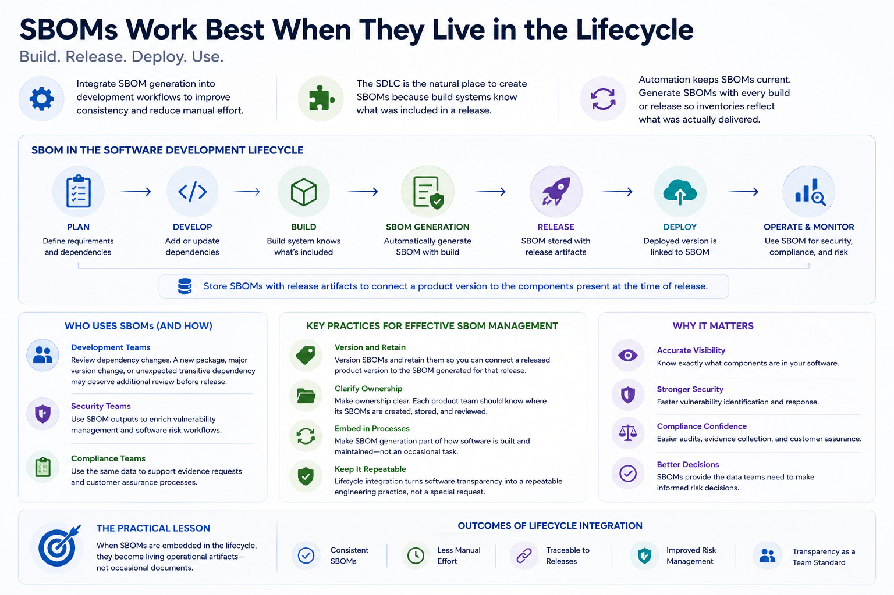

What Is SBOM?
SBOMs in the Software Development Lifecycle
Connecting to LMS... Progress: in progress
Version 1.0 | Date: 2026-06-16 | Educational overview of Software Bill of Materials concepts.

Narration
Many organizations generate SBOMs during software builds, release processes, and deployment activities. Integrating SBOM generation into development workflows can improve consistency and reduce manual effort.
The software development lifecycle is a natural place to create SBOMs because build systems often know which packages, libraries, containers, and artifacts were included in a release.
Automation helps keep SBOMs current. If an SBOM is generated every time software is built or released, the inventory is more likely to reflect what was actually delivered.
SBOMs can also be stored with release artifacts. This makes it easier to connect a product version to the components that were present at the time of release.
Development teams can use SBOMs to review dependency changes. A new package, major version change, or unexpected transitive dependency may deserve additional review before release.
Security teams can use SBOM outputs to enrich vulnerability management and software risk workflows. Compliance teams may use the same data to support evidence requests or customer assurance processes.
The practical lesson is to make SBOM generation part of how software is built and maintained. When SBOMs are embedded in the lifecycle, they become living operational artifacts rather than occasional documents.
Teams should also decide how SBOMs are versioned and retained. Being able to connect a released product version to the SBOM generated for that release can be critical during vulnerability response or customer assurance work.
Lifecycle integration also makes ownership clearer. If each product team knows where its SBOMs are created, stored, and reviewed, software transparency becomes a repeatable engineering practice rather than an occasional special request.